End-to-End Oncology Analysis with cliomicplot
Lucas VHH Tran
2026-10-17
Source:vignettes/oncology.Rmd
oncology.RmdOverview
This vignette demonstrates a complete oncology translational and clinical data analysis workflow with cliomicplot, following figure design standards from Nature, Cell, and Science:
- Figure 1A — Kaplan-Meier overall survival with landmark milestones (Nature / NEJM style)
- Figure 1B — Cumulative incidence for disease recurrence (Lancet Oncology style)
- Figure 2 — Multivariable Cox regression forest plot with row stripes & summary diamond (Science style)
- Figure 3A — Waterfall plot of RECIST v1.1 best tumor response
- Figure 3B — Swimmer plot with ongoing therapy arrowheads & RECIST event glyphs (Cell style)
- Figure 4 — Minimal Clinically Important Difference (MCID) dumbbell plot (Archetype 1)
- Figure 5 — Longitudinal patient trajectories with clinical severity bands (Archetype 4)
- Figure 6A — Time-course proteomics across disease recovery stages
- Figure 6B — Multi-protein longitudinal trajectories
- Figure 6C — Prism-style ANOVA boxplot with significance brackets
- Figure 7 — Industry clinical trial portfolio pipeline
-
Figure 8 — Composite multi-panel assembly with
patchworkandcli_panel_label() -
Figure Export — Journal trim sizing
(
cli_journal_size) and publication export (cli_save)
library(cliomicplot)
library(survival)
library(patchwork)
# Set global defaults for publication styling
clipar(
palette.qualitative = "nejm",
stat.test = NULL,
file.res = 600
)Figure 1A: Kaplan-Meier Survival Curves with Landmark Milestones
In oncology clinical trials, reporting overall survival (OS) requires both the step survival function and explicit landmark milestone rates (e.g., 6-month, 1-year, and 2-year survival) with confidence intervals.
type_km() provides a zero-dependency native
ggplot2 engine with aligned numbers-at-risk tables and
landmark milestone annotations:
clitheme("nejm")
cliplot(Surv(time, status) ~ sex, data = lung,
type = type_km(
risk_table = TRUE,
pval = TRUE,
conf_int = TRUE,
median_line = TRUE,
milestones = c(180, 365, 730)
),
palette = "nejm",
title = "**Figure 1A** — Overall Survival Stratified by Sex",
subtitle = "NCCTG Lung Cancer Trial (n = 228) with 6-mo, 1-yr, 2-yr Milestones",
xlab = "Time on Study (days)",
ylab = "Survival Probability",
legend = "top") +
cli_markdown()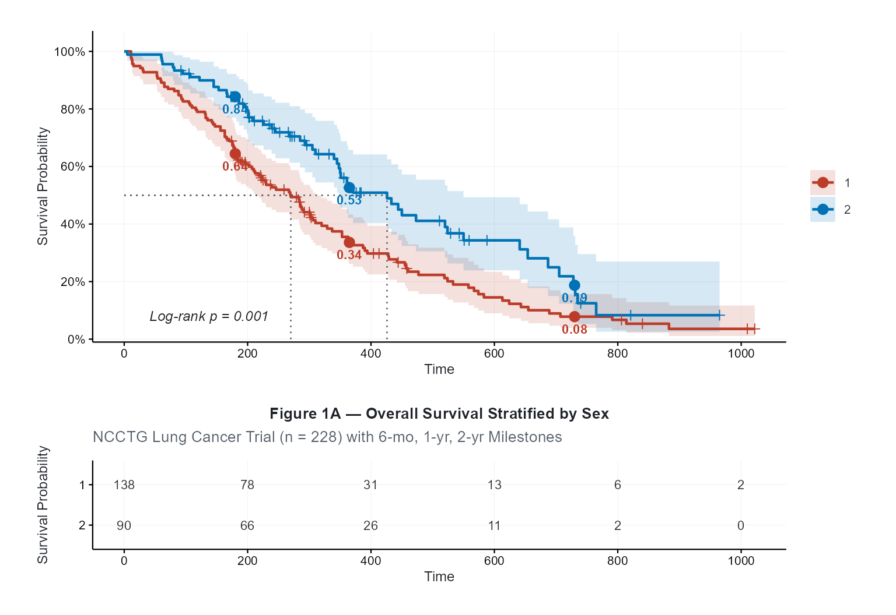
Figure 1B: Cumulative Incidence
When evaluating disease progression, toxicities, or adverse event rates, clinical journals prefer cumulative incidence curves starting at 0% and climbing toward 100%:
clitheme("lancet")
cliplot(Surv(time, status) ~ sex, data = lung,
type = type_km(
cumulative_incidence = TRUE,
risk_table = TRUE,
pval = TRUE,
conf_int = TRUE,
milestones = c(180, 365)
),
palette = "lancet",
title = "**Figure 1B** — Cumulative Incidence of Death",
subtitle = "NCCTG Lung Cohort — Landmark Milestones at 180 and 365 Days",
xlab = "Days Since Enrollment",
ylab = "Cumulative Incidence (%)",
legend = "top") +
cli_markdown()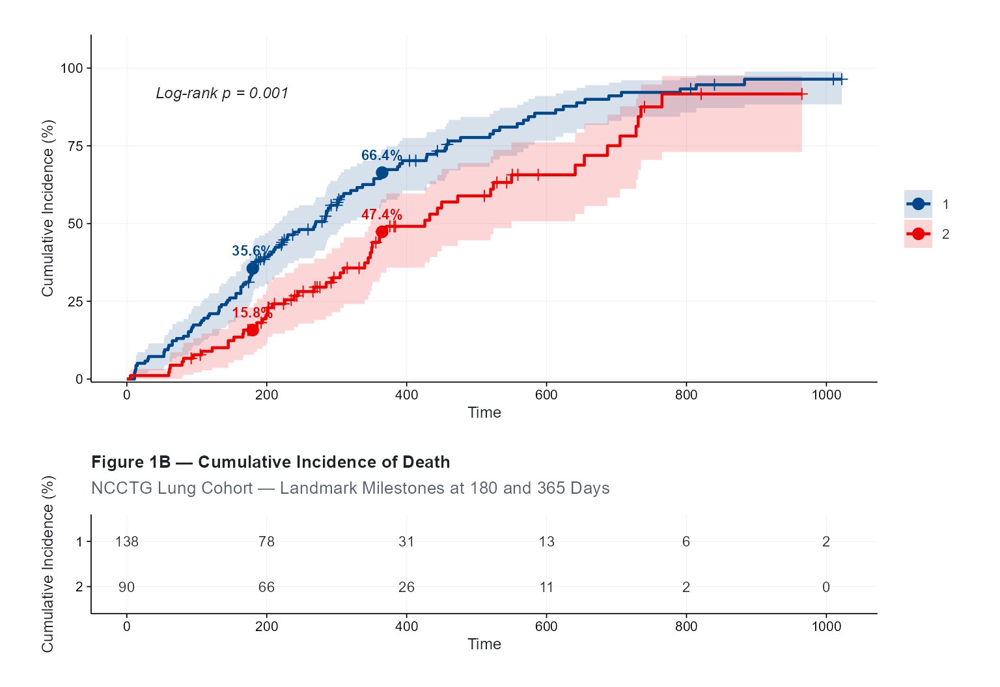
Figure 2: Multivariable Cox Regression Forest Plot
Forest plots summarize multivariable Cox proportional hazards models.
In Science and Lancet style: - Alternating subtle row stripes
(stripe = TRUE) guide the reader’s eye across wide
canvases. - Pooled summary estimates are highlighted with high-contrast
diamond glyphs (diamond = TRUE). - Odds/Hazard ratio
estimates and 95% CIs are aligned cleanly along the vertical axis.
# Fit Cox proportional hazards model
cox_fit <- coxph(Surv(time, status) ~ age + sex + ph.ecog + wt.loss, data = lung)
cox_sum <- summary(cox_fit)
# Prepare forest plot data frame
forest_df <- data.frame(
Variable = c("Age (per year)", "Male vs. Female",
"ECOG PS (per point)", "Weight loss (per lb)"),
HR = cox_sum$conf.int[, "exp(coef)"],
CI_low = cox_sum$conf.int[, "lower .95"],
CI_high = cox_sum$conf.int[, "upper .95"],
P = cox_sum$coefficients[, "Pr(>|z|)"]
)
clitheme("science")
cliplot(HR ~ Variable, data = forest_df,
type = type_forest(
ref_line = TRUE,
sort = TRUE,
point_size = 4,
ci_width = 1.2,
stripe = TRUE,
show_values = TRUE,
sig_color = "#E64B35",
ns_color = "#3C5488"
),
title = "**Figure 2** — Multivariable Cox Proportional Hazards Model",
subtitle = "Overall Survival Hazard Ratios (95% CI) with Row Stripes",
caption = "NCCTG Advanced Lung Cancer (n = 228)") +
cli_markdown()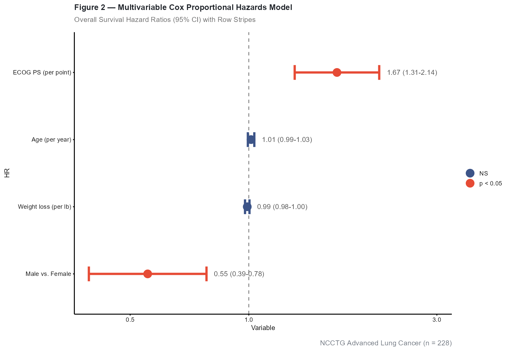
Figure 3A: Waterfall Plot — RECIST Best Tumor Response
In solid tumor trials, the waterfall plot displays the maximum percent change in target lesion diameter relative to baseline for each individual patient.
Standard RECIST v1.1 response cutoffs (+20% for Progressive Disease, -30% for Partial Response) are indicated by dashed threshold lines:
set.seed(42)
n_pts <- 30
imtrial <- data.frame(
Patient = paste0("PT-", sprintf("%02d", 1:n_pts)),
BestChange = sort(rnorm(n_pts, mean = -22, sd = 32)),
BestResp = sample(c("CR", "PR", "SD", "PD"), n_pts,
replace = TRUE, prob = c(0.10, 0.30, 0.35, 0.25)),
Duration = pmax(2, round(rnorm(n_pts, mean = 16, sd = 7), 1)),
Ongoing = sample(c(TRUE, FALSE), n_pts, replace = TRUE, prob = c(0.4, 0.6))
)
clitheme("broadsheet")
cliplot(BestChange ~ Patient, data = imtrial,
type = type_waterfall(
show_labels = TRUE,
label_size = 2.4,
bar_width = 0.75,
response_thresholds = c("PD" = 20, "PR" = -30)
),
title = "**Figure 3A** — Best Tumor Response from Baseline (Waterfall)",
subtitle = "RECIST v1.1 Thresholds: PD (+20%) and PR (-30%)",
ylab = "Best % Change in Target Lesions",
legend = "bottom") +
cli_markdown()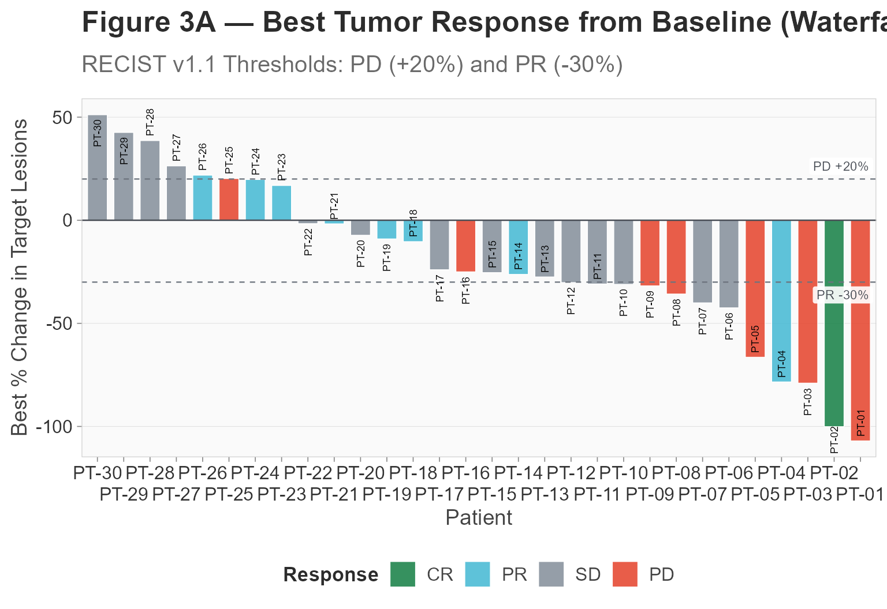
Figure 3B: Swimmer Plot with Ongoing Indicators & RECIST Events
Following Clinical Archetype 13, swimmer plots track
patient treatment timelines. Patients actively continuing therapy at
database lock are distinguished by arrowheads at their bar tips
(ongoing = "Ongoing"), and key clinical events are overlaid
with RECIST glyphs:
set.seed(123)
n_events_per_pt <- sample(1:3, n_pts, replace = TRUE)
n_total_events <- sum(n_events_per_pt)
events_df <- data.frame(
ID = rep(imtrial$Patient, times = n_events_per_pt),
Time = round(runif(n_total_events, 1, 26), 1),
Event = sample(c("Progression", "AE", "Dose Reduction", "Response", "Surgery"),
n_total_events,
replace = TRUE, prob = c(0.25, 0.25, 0.20, 0.20, 0.10))
)
clitheme("cell")
cliplot(Duration ~ Patient, data = imtrial,
type = type_swimmer(
bar_fill = "BestResp",
ongoing = "Ongoing",
event_times = events_df,
show_duration = TRUE,
bar_alpha = 0.85
),
bar_palette = "jama",
title = "**Figure 3B** — Patient Treatment Trajectories (Swimmer)",
subtitle = "Arrows indicate ongoing therapy at data lock | Overlay: RECIST Events",
xlab = "",
ylab = "Time on Study (months)",
legend = "bottom") +
cli_markdown()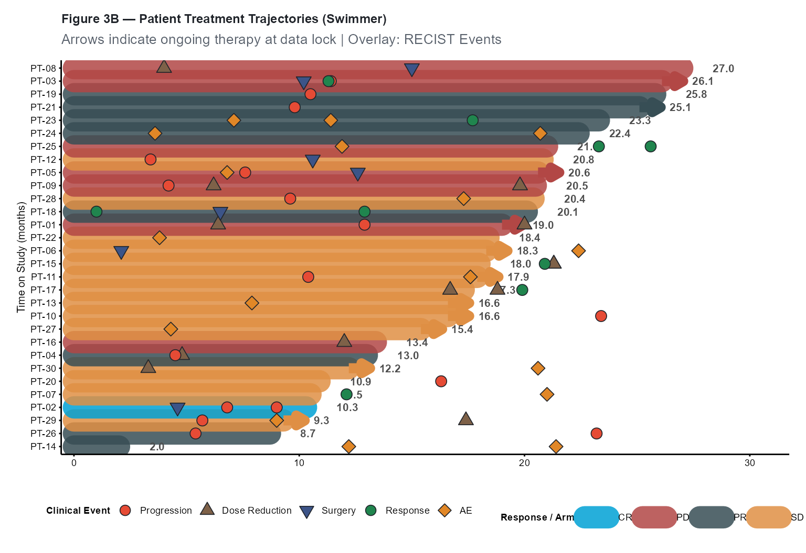
Figure 4: Minimal Clinically Important Difference (MCID) Dumbbell Plot
In modern oncology and immunotherapy trials, statistical significance () does not always equate to meaningful patient benefit.
The MCID Dumbbell Plot (Clinical Archetype 1) connects observed clinical effect estimates to validated instrument MCID thresholds (e.g. FACT-G, QLQ-C30, Pain NRS, DLQI), scaling point glyphs by sample size () and sorting endpoints by their effect-to-MCID ratio:
mcid_oncology = data.frame(
Endpoint = c("FACT-G QoL (Anti-PD1)", "Pain NRS (Analgesic Add-on)",
"Fatigue Score (Exercise Co-care)", "QLQ-C30 Physical (Anti-PD1)",
"Appetite Loss (Standard Care)"),
Estimate = c(8.5, 3.4, 4.2, 11.2, 1.8),
MCID = c(5.0, 2.0, 3.0, 8.0, 4.0),
N = c(520, 380, 240, 510, 190),
Category = c("Immunotherapy Exceeding MCID", "Adjuvant Exceeding MCID",
"Supportive Care Exceeding MCID", "Immunotherapy Exceeding MCID",
"Standard Care Below MCID")
)
clitheme("nature")
cliplot(Estimate ~ Endpoint, data = mcid_oncology,
type = type_mcid(
mcid = "MCID",
n_treated = "N",
category = "Category",
sort_by_ratio = TRUE
),
title = "**Figure 4** — Minimal Clinically Important Difference (MCID) Evaluation",
subtitle = "Comparing observed clinical effects to validated instrument thresholds",
xlab = "Absolute Effect Estimate (|estimate|)") +
cli_markdown()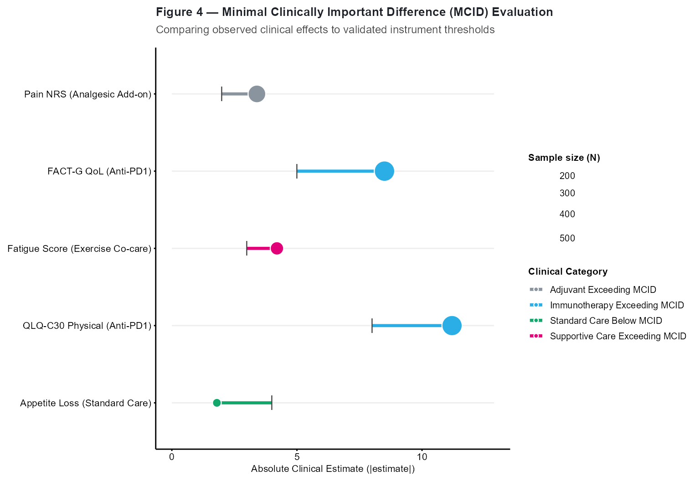
Figure 5: Longitudinal Trajectories with Clinical Severity Bands
Patient biomarkers and clinical scores exhibit substantial between-subject variability.
The Longitudinal Trajectory Plot (Clinical Archetype 4) overlays semi-transparent individual patient profiles onto shaded reference severity bands (e.g., Mild, Moderate, Severe), anchored by a bold group mean ribbon and sample size callouts ():
set.seed(42)
n_patients = 20
visits = c("Baseline", "Cycle 2", "Cycle 4", "Cycle 6", "Follow-up")
traj_df = expand.grid(Patient = paste0("PT-", sprintf("%02d", 1:n_patients)), Visit = visits)
# Simulate circulating biomarker decline under effective targeted therapy
base_vals = rep(runif(n_patients, 55, 90), each = length(visits))
decay_vals = rep(c(0, 15, 32, 48, 55), times = n_patients)
noise = rnorm(nrow(traj_df), mean = 0, sd = 5)
traj_df$Marker = pmax(2, pmin(100, base_vals - decay_vals + noise))
clitheme("science")
cliplot(Marker ~ Visit | Patient, data = traj_df,
type = type_trajectory(
severity_bands = list(Normal = c(0, 25), Elevated = c(25, 50), Critical = c(50, 100)),
severity_colors = c(Normal = "#E8F8F5", Elevated = "#FEF9E7", Critical = "#FADBD8"),
show_mean = TRUE,
show_ci = TRUE,
show_n = TRUE
),
title = "**Figure 5** — Longitudinal Biomarker Response Trajectories",
subtitle = "Circulating Tumor Protein Dynamics with Severity Stratification",
ylab = "Tumor Biomarker Concentration (ng/mL)") +
cli_markdown()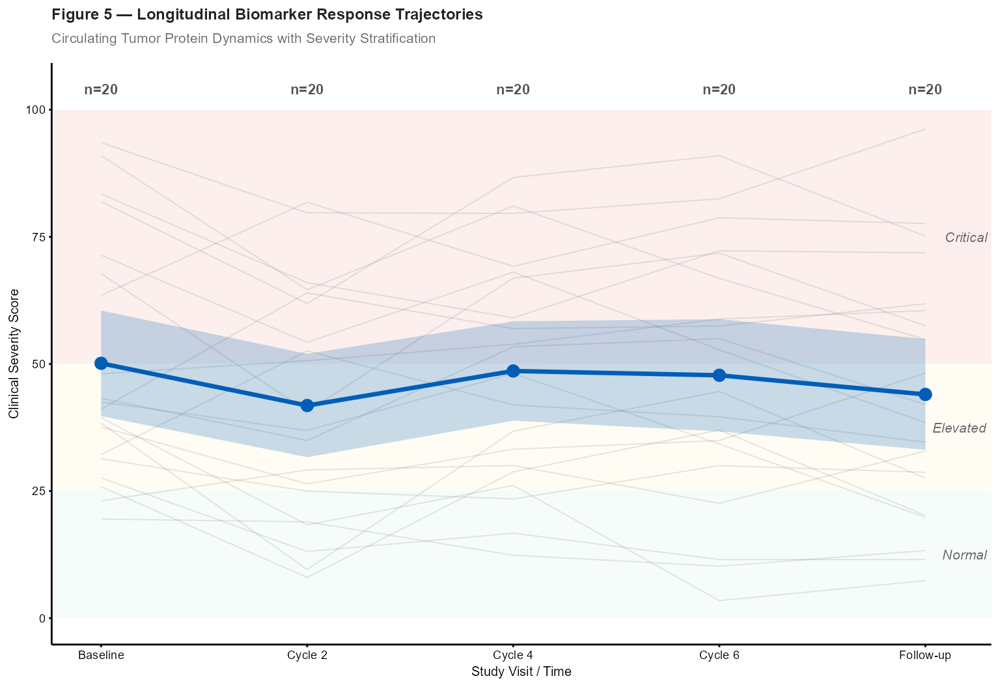
Figure 6A: Time-Course Translational Proteomics
Using real xOmicsShiny StrokeBrain_TimeCourse data to visualize protein expression trajectories across 5 recovery time points in ischemic stroke (StrkIp), sham surgery (ShamIp), and naive control (StrkC):
# Helper to resolve bundled package data
resolve_data = function(filename) {
pkg_path = system.file("extdata", filename, package = "cliomicplot")
if (pkg_path != "" && file.exists(pkg_path)) return(pkg_path)
fallback = file.path("..", "inst", "extdata", filename)
if (file.exists(fallback)) return(fallback)
fallback2 = file.path("inst", "extdata", filename)
if (file.exists(fallback2)) return(fallback2)
stop("Cannot find data file: ", filename)
}
# Load stroke time-course proteomics
stroke_env = new.env()
load(resolve_data("StrokeBrain_TimeCourse.RData"), envir = stroke_env)
# Merge gene symbols
stroke_long = merge(stroke_env$data_long,
stroke_env$ProteinGeneName[, c("UniqueID", "Gene.Name")],
by = "UniqueID", all.x = TRUE)
# Select Mpeg1 (macrophage/microglia activation marker)
mpeg1 = subset(stroke_long, Gene.Name == "Mpeg1")
mpeg1$Day = as.numeric(mpeg1$conc)
mpeg1$Treatment = mpeg1$treatment
clitheme("science")
cliplot(expr ~ Day | Treatment, data = mpeg1,
type = type_lines(linewidth = 1.2),
palette = "jco",
title = "**Figure 6A** — Mpeg1 Macrophage Marker Time Course",
subtitle = "Stroke Brain Proteomics — 5 Time Points (Days 1–28)",
xlab = "Days Post-Onset",
ylab = "Protein Expression (LFQ Intensity)") +
cli_markdown()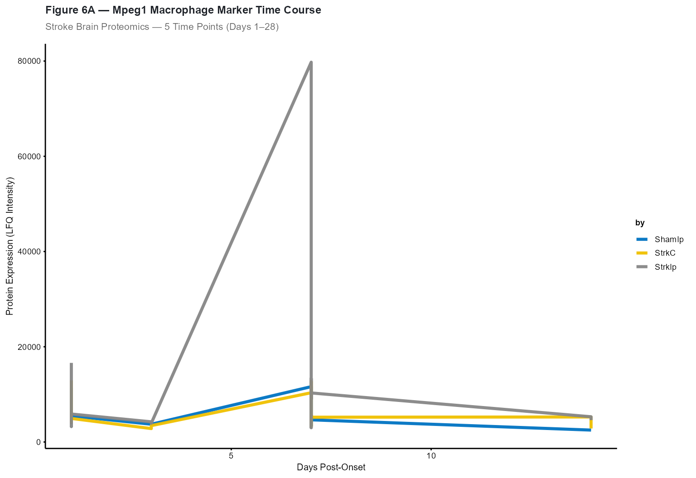
Figure 6B: Multi-Protein Longitudinal Trajectories
Tracking 6 key neuro-inflammatory markers across ischemic injury progression:
immune_genes = c("Mpeg1", "C1qa", "C3", "Trem2", "Tyrobp", "Itgam")
immune_data = subset(stroke_long, Gene.Name %in% immune_genes & treatment == "StrkIp")
immune_data$Day = as.numeric(immune_data$conc)
immune_means = aggregate(expr ~ Gene.Name + Day, data = immune_data, FUN = mean, na.rm = TRUE)
clitheme("nature")
cliplot(expr ~ Day | Gene.Name, data = immune_means,
type = type_lines(linewidth = 1.1),
palette = "lancet",
title = "**Figure 6B** — Immune Protein Dynamics (Ischemic Model)",
subtitle = "Mean LFQ across 5 time points in the damaged hemisphere",
ylab = "Mean LFQ Intensity",
legend = "right") +
cli_markdown()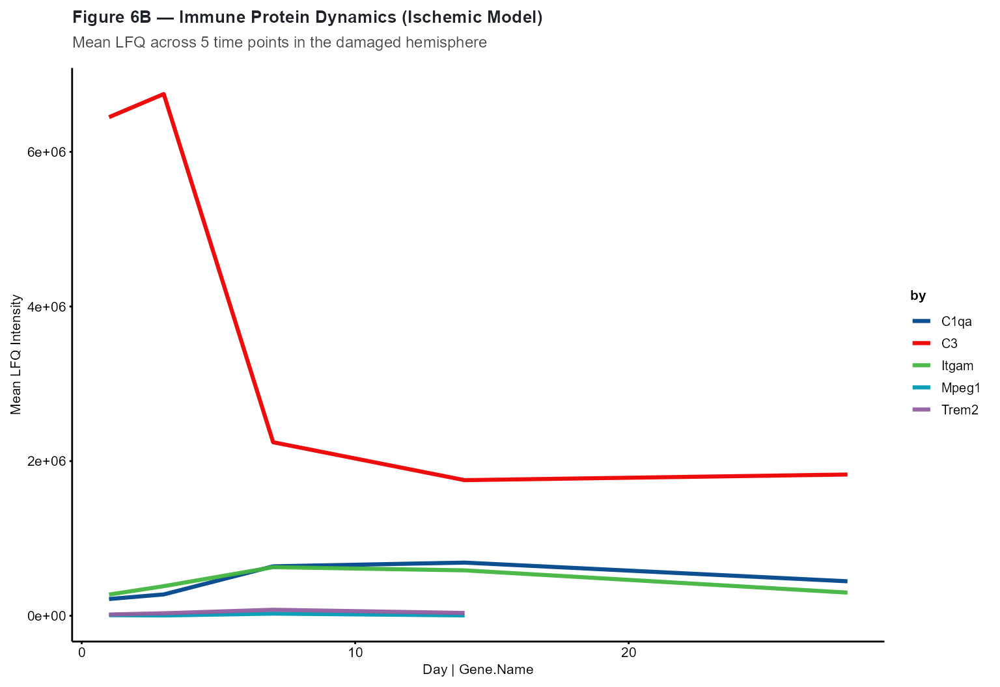
Figure 6C: Prism-Style Boxplot with ANOVA
Using xOmicsShiny AgingHFCD_Metabolomics data to compare metabolite levels across four experimental groups with statistical annotations:
aging_env = new.env()
load(resolve_data("AgingHFCD_Metabolomics.RData"), envir = aging_env)
# Select top DE metabolites and assign clinical labels
top_mets = head(unique(aging_env$results_long$UniqueID[aging_env$results_long$Adj.P.Value < 0.01]), 4)
met_data = subset(aging_env$data_long, UniqueID %in% top_mets)
met_data$Group = factor(met_data$group,
levels = c("Young_CD", "Old_CD", "Young_HF", "Old_HF"),
labels = c("Young+CD", "Old+CD", "Young+HF", "Old+HF"))
clitheme("scifig")
cliplot(expr ~ Group | UniqueID, data = met_data,
type = type_boxplot(
add_jitter = TRUE,
jitter_width = 0.22
),
stat.test = "anova",
stat.label = "p.signif",
palette = "jco",
title = "**Figure 6C** — Metabolite Levels by Age × Diet Group",
subtitle = "Top 4 DE metabolites | One-way ANOVA with significance stars",
ylab = "Metabolite Abundance (log2)") +
cli_markdown()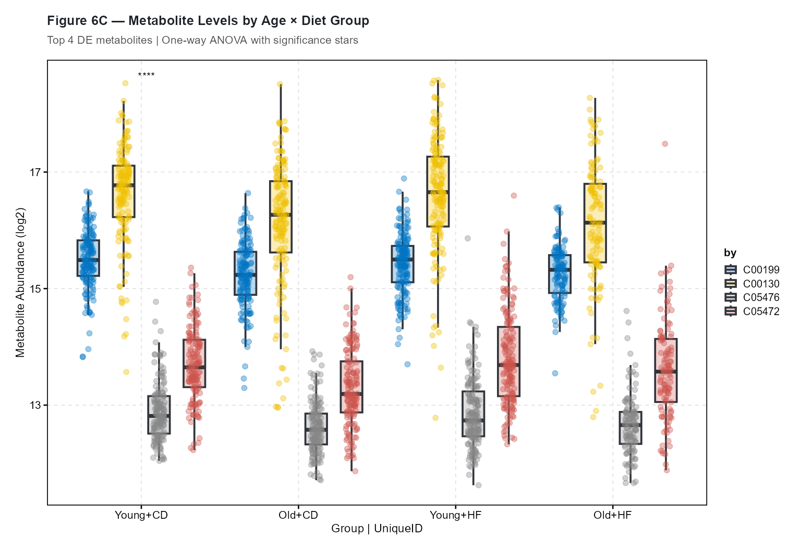
Figure 7: Clinical Trials Pipeline — Stacked Bar Chart
type_trials() visualizes oncology drug development
portfolios categorized by clinical trial phase:
pipeline <- data.frame(
company = rep(c("AstraZeneca", "Roche", "MSD", "Lilly", "Hengrui",
"Sanofi", "Novartis", "BMS", "J&J", "Pfizer", "AbbVie"),
each = 5),
phase = rep(c("I", "I/II", "II", "II/III", "III"), 11),
n = c(4,3,24,0,32, 10,8,21,0,19, 4,2,30,1,15, 6,3,15,0,17,
15,0,15,0,8, 7,0,14,0,16, 8,3,7,0,17, 7,5,14,1,6,
6,2,7,0,14, 9,2,10,0,6, 4,3,4,0,15)
)
phase_colors <- c(
"I" = "#F8D95C", "I/II" = "#D69B3C", "II" = "#A7BA91",
"II/III" = "#B76348", "III" = "#123F2A"
)
clitheme("cli_bw")
cliplot(n ~ company | phase, data = pipeline,
type = type_trials(
segment_colors = phase_colors,
label_threshold = 3
),
title = "**Figure 7** — Oncology Pipeline Activity by Development Phase",
subtitle = "Global Pharmaceutical Portfolios with ≥ 25 Active Clinical Trials",
caption = "Source: Citeline Annual Clinical Trial Report")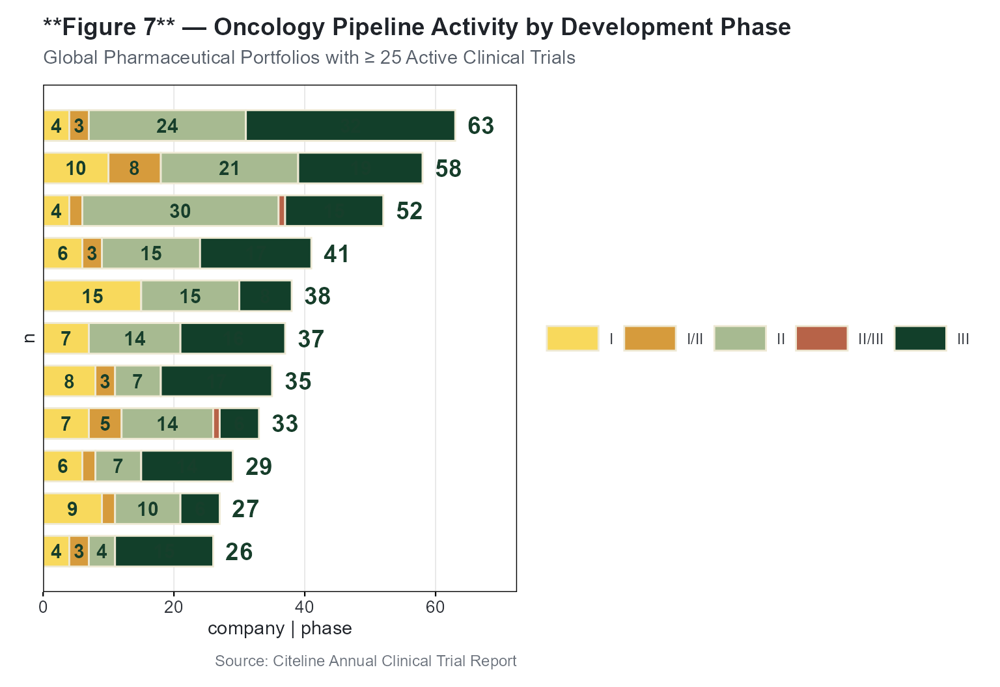
Figure 8: Nature / Cell Multi-Panel Composite Assembly
Premier journals mandate unified composite figures with standardized bold panel labels (a, b or A, B) and synchronized typography:
p_waterfall <- cliplot(BestChange ~ Patient, data = imtrial,
type = type_waterfall(show_labels = FALSE, bar_width = 0.7),
theme = "cell",
title = "Best Tumor Response") +
cli_panel_label("a")
p_swimmer <- cliplot(Duration ~ Patient, data = imtrial,
type = type_swimmer(
bar_fill = "BestResp",
ongoing = "Ongoing",
event_times = events_df
),
theme = "cell", bar_palette = "jama",
title = "Treatment Duration & Events") +
cli_panel_label("b")
p_waterfall + p_swimmer +
plot_layout(widths = c(1, 1.2)) +
plot_annotation(
title = "**Figure 8** — RECIST Response Assessment in Phase II Immunotherapy",
caption = "Simulated trial data: 30 evaluable patients",
theme = ggplot2::theme(plot.title = ggtext::element_markdown(face = "bold", size = 13))
)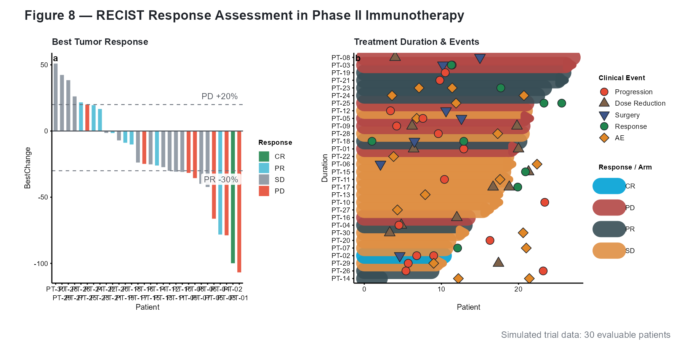
Journal Dimensions & Publication-Ready Export
When submitting to major scientific publishers, figure canvas dimensions must match exact column widths in millimeters.
cli_journal_size() provides presets for 9 premier
publishers:
# Check Nature and Cell submission dimensions
cat("Nature 2-column width:", cli_journal_size("nature", 2)$width_mm, "mm\n")
#> Nature 2-column width: 183 mm
cat("Cell 2-column width: ", cli_journal_size("cell", 2)$width_mm, "mm\n")
#> Cell 2-column width: 180 mm
cat("Science 2-column width:", cli_journal_size("science", 2)$width_mm, "mm\n")
#> Science 2-column width: 183 mmExport individual figures with cli_save() to verify
format compliance and embed fonts:
# Nature full-width composite figure export
p_comp = p_waterfall + p_swimmer
cli_save(p_comp, "Figure_8_Nature.pdf", journal = "nature", columns = 2, height_mm = 120)
# Cell single-column KM milestone export
p_km = cliplot(Surv(time, status) ~ sex, data = lung,
type = type_km(milestones = c(180, 365)), theme = "cell")
cli_save(p_km, "Figure_1_Cell.pdf", journal = "cell", columns = 1, height_mm = 85)Summary
In this oncology vignette, we demonstrated:
-
type_km(): Survival curves with landmark milestone percentage dots and aligned numbers-at-risk. - Cumulative Incidence: Mode for time-to-recurrence and adverse events.
-
type_forest(): Cox model hazard ratios with alternating row stripes and meta-analysis diamond. -
type_waterfall(): RECIST best percentage change from baseline with response thresholds. -
type_swimmer(): Patient timelines with ongoing therapy arrows and RECIST event glyphs. -
type_mcid(): Minimal clinically important difference dumbbell plots (Archetype 1). -
type_trajectory(): Longitudinal profiles with clinical severity bands and sample size callouts (Archetype 4). -
Multi-panel layout & export: Exact journal
millimeter trim sizes with
cli_journal_size()andcli_save().